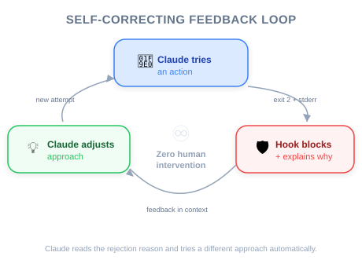

Figure: .env file guard data flow — PreToolUse intercepts Read calls and blocks access to sensitive files.
| Item | Details |
|---|---|
| Exam Coverage | D3 — Claude Code Configuration & Workflows (20% of exam) |
| Task Statements | 3.2 (custom commands & hooks), 1.5 (Agent SDK hooks) |
| Course Source | claude-code-in-action / 05-hooks / Lesson 16 |
This lesson demonstrates a complete, working hook implementation — from configuration to testing. PMs do not need to write hooks, but understanding the implementation flow helps you write better acceptance criteria, estimate engineering effort, and verify that security requirements are properly enforced.
Figure: .env file guard data flow — PreToolUse intercepts Read calls and blocks access to sensitive files.
Think of implementing a hook like setting up a new security camera system in a building:
| Step | Building Security | Hook Implementation |
|---|---|---|
| 1. Register the camera | Add it to the security control panel | Add hook entry in settings.local.json |
| 2. Point it at the right door | Set the camera angle | Set matcher to target specific tools |
| 3. Program the alert rules | "Alert if someone enters after 10pm" | Write script: "Block if file path contains .env" |
| 4. Test the system | Walk through the door to verify | Ask Claude to read .env — verify it is blocked |
| 5. Activate | Turn on the system | Restart Claude Code |
💡 PM Insight
The most important detail: hooks require a restart to take effect. This means deploying a new hook to a team is not instantaneous — factor this into your rollout plan.
When your engineer implements a hook, here is a checklist for your acceptance criteria:
Read and Grep must be covered. Ask: "Can Claude access this data through any other tool?"settings.local.json (not in git)settings.json (committed to git)⚠️ PM Risk Alert
If a security hook is in
settings.local.json, each developer must configure it individually. For compliance requirements, insist onsettings.json(team-shared).

One of the most powerful aspects of hooks for PMs to understand:
.envThis means hooks create autonomous compliance — the AI agent self-corrects without needing a human to intervene. This is a significant product advantage over prompt-based approaches.
For PMs planning sprints:
| Hook Complexity | Effort | Example |
|---|---|---|
| Simple file guard | 1-2 hours | Block reading .env, .credentials |
| Pattern-based blocker | 2-4 hours | Block Bash commands matching a blocklist |
| Conditional logic | 4-8 hours | Block refunds > $500, allow if manager-approved |
| Multi-tool coordination | 1-2 days | Enforce workflow ordering across multiple tools |
| ❌ Wrong Approach | ✅ Correct Approach | Why |
|---|---|---|
| Assume the hook "just works" after saving | Always restart Claude Code after hook changes | Hooks load at startup only |
| Accept silent blocking (no feedback message) | Require clear, actionable error messages | Without feedback, Claude cannot self-correct |
| Put compliance hooks in personal settings | Put compliance hooks in team-shared settings | Personal settings cannot be enforced across the team |
| Test only the blocking case | Test both blocking and allowing | Overly aggressive hooks break normal workflows |
Your team has implemented a PreToolUse hook to prevent the AI support agent from processing refunds over $500. During testing, the hook correctly blocks large refunds. However, the agent responds to customers with "I encountered an error" instead of explaining the policy. What should you recommend?
Your team deployed a PreToolUse hook to block Claude from modifying migration files. An engineer reports that the hook was not active on their machine, and Claude modified a migration file. Investigation reveals the hook was configured in settings.local.json on the team lead's machine only. What is the correct fix?
.claude/settings.json and commit it to version control~/.claude/settings.json) on all machinesAn engineer has implemented a PostToolUse hook that runs a data validator after each API tool call. During testing, the hook correctly validates data, but Claude does not use the validated data in its responses. What is the most likely issue?